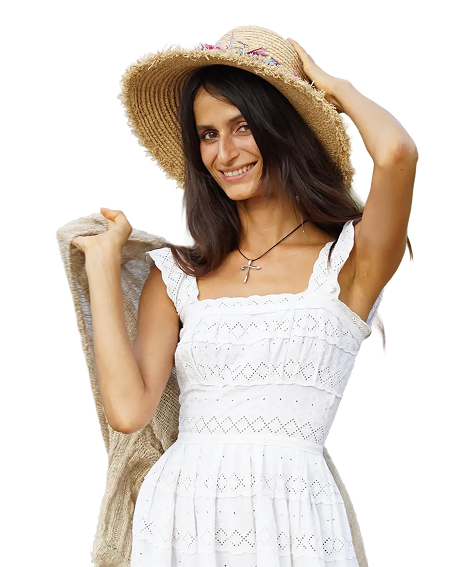

Семена льна
Содержат лигнаны, растительные соединения, мягко балансирующие эстроген
Женское гормональное здоровье
Знали ли вы, что яичники — единственный орган в вашем теле, который начинает стареть уже с рождения и делает это быстрее всех остальных органов? К 35 годам яичники функционально “старше” вашего биологического возраста на 5-10 лет. Сердце, кожа, мышцы — у них есть время. У яичников — нет.

Именно поэтому симптомы, которые вы спишете на “просто устала” или “наверное, погода”, часто на самом деле означают, что яичники уже начали менять способ своей работы — а вы можете даже не замечать этого месяцами, а то и годами.
Мини-тест
Отвечайте да/нет:
Что важно понять
Яичники не ждут, пока вы “соберётесь” начать заботиться о них.
Каждый год без целенаправленной поддержки — не нейтральный год. Он либо работает на вас, либо против вас.
Я видела разницу между женщинами, которые начали за 5-7 лет до менопаузы, и теми, кто начал уже в разгар симптомов. Разница — не в теории. Она в качестве жизни каждый день: в том, спите вы спокойно или нет, злитесь ли на близких без причины, узнаёте ли себя в зеркале.
Личное
Мне 38 лет. И если честно — я забочусь о своих яичниках с 30. Не потому что столкнулась с проблемой, а потому что я мастер природной медицины, и я слишком хорошо знаю: то, что не видно сегодня, определяет, как вы будете чувствовать себя через 10-15 лет.
За эти годы через мои программы прошло больше 20 000 учениц. И знаете, что удивительно? Я и сама себе ученица — я постоянно прохожу свои же программы, проверяю их на себе снова и снова, прежде чем предложить кому-то ещё.
За это время я заметила одну вещь, которая меня саму поражает каждый раз: даже простое, но системное оздоровление организма решает огромную часть женских вопросов — просто потому, что тело начинает работать так, как задумано природой. А когда к этому добавляются точечные гормональные практики — эффект усиливается в разы.
У меня немало личных кейсов восстановления хорошего самочувствия у женщин — и при ранней менопаузе, и в разгар самого перехода, и уже после него. Это не обещание “чуда”. Это результат системной, последовательной работы с телом — той самой, которой я хочу поделиться и с вами.
Питание для поддержки яичников
Содержат лигнаны, растительные соединения, мягко балансирующие эстроген
Противовоспалительное действие, снижает нагрузку на гормональную систему
Остальные 10 — и, что важнее, точные пропорции и сочетания, которые реально работают, а не просто “общий список полезного” — я разбираю на вебинаре. Список продуктов без понимания, как и когда их использовать именно на вашей стадии перехода, — это как рецепт без инструкции готовки.
Момент, который должен заставить задуматься
Оно предупреждает тихо — раздражительностью, которую легко списать на усталость, животом, который “просто так” изменил форму, сном, который стал чутким. Я знаю это не только как эксперт, но и как женщина, которая тоже слушает своё тело каждый день. Вопрос не в том, происходит ли это с вами. Вопрос в том, замечаете ли вы это вовремя.
Приглашение на вебинар
На вебинаре я даю не общие рекомендации, а конкретный протокол — что именно делать при вашем результате теста, в каком порядке и как адаптировать это под вашу текущую фазу.
Клуб «ВЕДАНИЕ»
В клубе ВЕДАНИЕ мы работаем с этой темой глубже: с личным сопровождением, практиками и поддержкой каждый месяц.